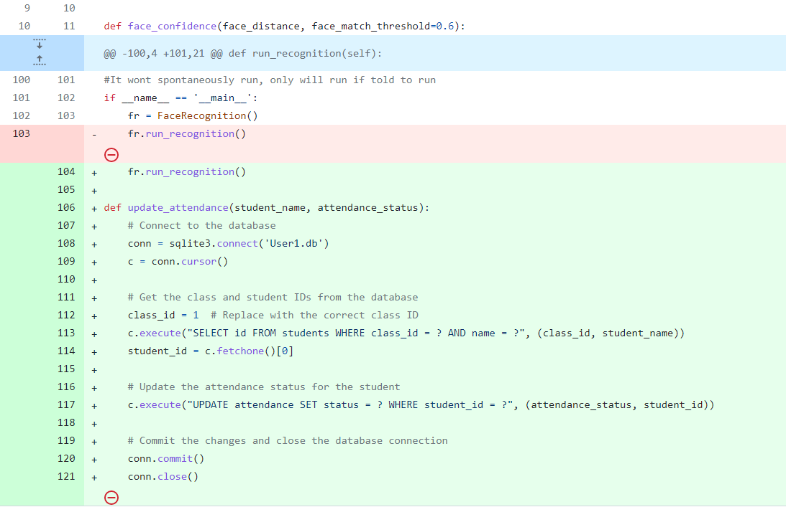
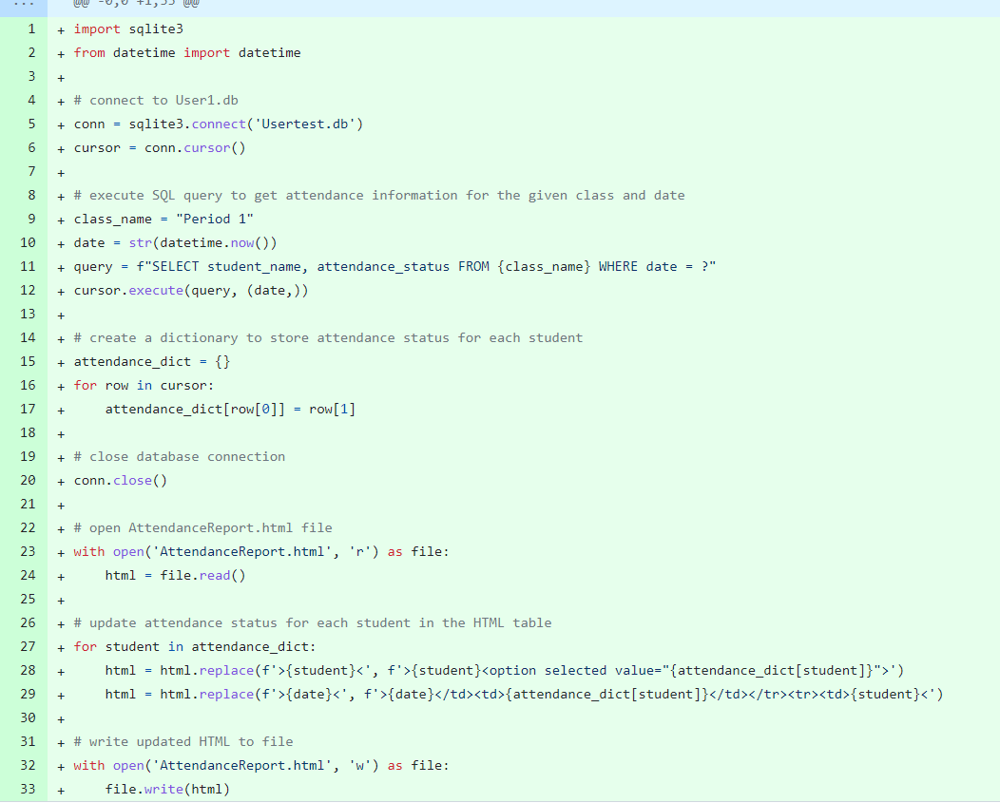
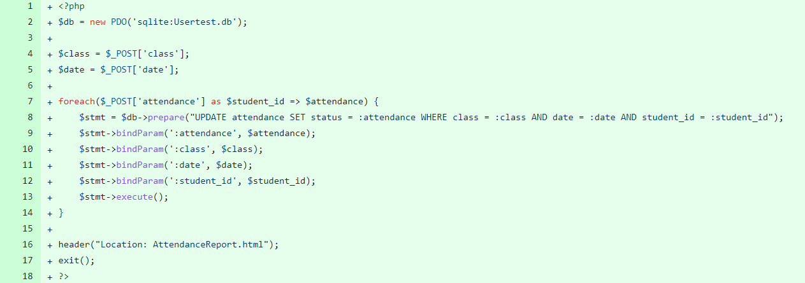

24-Apr-2023
Plans
Implement: Issue #84 - Update the Newclass.html page to update the database rather than using local storage 17-Apr-2023 Plans Implement: Issue 75 - Create a function to update attendance based upon the facial recognition. This will help bring the spilt up parts of the project together and will get the first prototype to actually work. Significant Achivements

Technical Challenges I had a lot of issues when getting the database to acutally update and when retreiving information from the html page or the database. I was able to overcome this issue with a lot of reasearch and testing. 11-Apr-2023 Significant Achivements Added page where the classes can be made by the teacher Technical Challenges This week we worked on the front end and the data base. I had an issue when trying to get a button on one html page to make an action occur on another html page. I overcame this issue by doing research and I was eventually able to fix the problem. Scheduling Challenges There were no scheduling challenges this week. We continued working on the project and communicated if we needed to work together through discord.
Interpersonal Challenges This week there were no interpersonal challenges. We just kept working on the website together. 4-Apr-2023 Significant Achivements Made page to check if you are an admin Technical Challenges This week we worked mainly on the front end. We didn't have many technical challenges this week. I had one small issue when trying to determine if the email entered on the page ended in @student.allenisd.org. Scheduling Challenges There were no scheduling challenges this week. We continued working on the project using discord becuase it allows us to share screen easily so we could help each other.
Interpersonal Challenges This week there were no interpersonal challenges. We made sure to set goals and we were on task. 27-Mar-2023 Technical Challenges This week we worked more on the AI and a new page on the front end that shows a live display of the cameras feed. There were not significant errors we had when coding. Any errors we had were just resolved by searching on the internet. Scheduling Challenges There were no scheduling challenges this week. Althoug school work got in the way a little bit we were able to work around it by just telling each other on discord when we could work on the project.
Interpersonal Challenges There were no interpersonal challenges this week. We just continued work when we were able to. Significant Commits Finished transfer learning facial recognition AI 20-Mar-2023 Technical Challenges This week we worked more on the front end and I worked especially with sytling the new student information page. I also started coding a new transfer learning AI to see if it has a higher accuracy. We overcame any issue we had by consulting others and the internet. Scheduling Challenges Scheduling was a small challenge this week as some of us had lots of test this week and it was hard to find any time to work on the project. We overcame this by planning our our week to fit in time to work.
Interpersonal Challenges Interpersonal challenges were not a problem this week. We just continued work on the ISP. Significant Commits Updated Student Information Page to fit the style of the website - this was a very large commit so I only commited twice this week 13-Mar-2023 Technical Challenges We mainly worked on the front end of the website and created new pages for the website. The technical challenges this week were just when we didn't know specific syntax and searched it up. Scheduling Challenges There were no scheduling challenges this week because we just got back from spring break and the school workload was low so we were able to work together with out any difficulty.
Interpersonal Challenges Since we just got back from Spring Break our group wasn't as focused as before and we sometimes were getting off task and being ineffecient. We will overcome this by making sure to keep each other accountable. Significant Commits Student Information Page 27-Feb-2023 Technical Challenges We continued work on the website itself along with integrating our AI facial recognition in the website. When trying to implement the AI into the website we ran into various issues. We overcame the issues by doing research in which we figured out that we need to use python scripts instead of python code becuase python scripts can be converted to Javascript which would allow for us to integrate the AI. Scheduling Challenges Scheduling was a challenge this week. Wednesday was SAT day and friday was a half day. Since the SAT was on Wednesday most of our group members priority fell on studying for the SAT and we werent able to work on Friday becuase it was a half day. This issue will be resolved by it self as there are no more school day SATs and half days are a rare occurance.
Interpersonal Challenges The only interpersonal challenges we had were our team getting off task a little bit due to the coming spSpring Break. We will overcome this by making sure stay on task and keep each other accountable. 20-Feb-2023 Technical Challenges This week our team worked on the website that we will integrate our facial recognition AI with. There were occasional technical problems when coding. We solved these problems by finding the error and fixing it or if we didn't know how to fix the error we researched how to code what we were trying to do. Scheduling Challenges Scheduling wasn't a major challenge this week. Up until tuesday there was no school and we didn't work much although from Wednesday to Friday we worked on the ISP. In other weeks we will be able to get more work done since we will have more days to work on the project.
Interpersonal Challenges There were no interpersonal challenges this week. We continue to use discord to communicate and it is working well. This week we didn't set any goals since the week was abnormaly short but we need to make sure we set goals for the coming weeks. 13-Feb-2023 Technical Challenges This week our team worked on the Facial Recognition model and the front end of our application. There were not many technical issues other than a few github issues in pushing code to github. We resolved these issues by researching on the internet and implementing what we found. We will keep this information in mind to make sure we don't make the same mistakes in the future. Scheduling Challenges Scheduling was major issue this week. This week we had lots of other computer science assignments so our team was less focused on progressing the ISP. A few of my team members along with me had lots of test in our other classes making it very hard for us to make goo progress on the ISP. We can hopefully resolve this issue by working on the weekends if we are unable to work during the week to make up some of the time we lost that would have been spent on the project.
Interpersonal Challenges There were no interpersonal challenges this week. We have started to use discord more as out means of communication and it is working well. To make sure there aren't any interpersonal problems in the future we just need to setting goals and making sure we are working efficienlty. 6-Feb-2023 Technical Challenges This week we continued to work ont he facial recognition model. We haven't completed the model to the point of testing yet so we were not able to debug the code and find issues, although we weren't using best coding pratices. We can fix this by going back and editing the code to make sure it follows the best coding practices so it is easy to read. We will make sure to keep using best coding practices so that all group members can easily understand code written by others in the group. Scheduling Challenges Scheduling wasn't a big challenge this week. We were able to work on the project when we needed to this week. We just communitcated through messages and set up a time when a few of us could work together after school. Hopefully we will be able to work freely like this week from now on.
Interpersonal Challenges There were no interpersonal challenges this week. To make sure we don't have any in the future we will continue to keep each other accountable and set goals. 23-Jan-2023 Technical Challenges We started working on the machine learning model as well as researching the best way to go about image recognition specific to faces. We have had a few minor issues with the pictures in the database we made previously. Tough problems will arise soon as we start to work with the API. To fix the current problem the QA engineers will work alongside the software engineers to solve the issue. We will also look deeper into the issue in order to avoid similar problems in the future. Scheduling Challenges Scheduling challenges were a bigger issue this week than in the past. Our group members generally had lots of work to complete in all of their other classes and we had to study for the SQL quiz. Since we were focused on learning SQL working on our ISP took a backseat in our priorities. It was also hard to find time to work together as activities and other class assignments all happened at different times. This challenge will resolve itself as tests and quizzes don't generally pile up to this degree. One thing I can do is try to study or complete more of my homework in advance if I know the following week will be tough.
Interpersonal Challenges We did not have any interpersonal challenges this week as we were not able to work as much as in other weeks so we made sure to work efficiently. To try to prevent our group from being off task in the following weeks we can try to set more defined goals and keep each other accountable. 16-Jan-2023 Technical Challenges Technical issues were again not a problem this week. We are currently in the process of creating the dataset that will be used by the facial recognition model. I expect to run into some problems in regards to the dataset. One major concern is if the amount of pictures we get for each face will be sufficient for the model to accurately predict the person. We expect to overcome these potential issues by expanding the dataset with more pictures and taking pictures from different angles so the camera can be placed in all kinds of setup and the system will continue to function. Scheduling Challenges Scheduling chalenges were minimal this week as we were able to get around the issue of being in different class periods. The pace of school is picking up again and the team's time has been reduced. With everyone having exams at different times, scheduling to meet up and work on the ISP has become harder. We will work around this problem by creating a shared online calender in which we can put what times and dates we are availible which will make is a lot easier to meet up with the rest of the team.
Interpersonal Challenges Interpersonal challenges are again not a major issue. When we sometimes worktogether we may not be 100 percent focused at all times but generally we are working efficiently. We will make sure to continue to work well with each other and make sure to get things done on time. We will do this by establishing small goals that each subteam has to meet by a specified date. 9-Jan-2023 Technical Challenges Technical issues were not a major issue for us this week. We are still in early stages of our ISP, therefore are yet to start the coding process in which most technical issues will arise. We did have a few probelms with editing the README file as we tried to get the page organized showing the roles and the team members with the website links in a proper fashion. We overcame this issue by collaborating and making sure we all knew what we each were doing. Scheduling Challenges Being in a different class period than my team members proved to be a difficult obstacle. It became a problem this week when we had to discuss what the team roles would be. My team members were able to discuss in class, presenting their abilities to determine their roles, but I was only able to communicate briefly through text on my abilities. All of the team member have different resposibilities after school weather its a club, job, or any other extracurricular activities and we haven't found a time that would work every week that we can meet and work on the ISP. Although this issue should be resolved shortly. Our ISP group plans to communicate further in order to find an optimal time to work together. We will also spilt the tasks in to different groups which will make meetings easier as each subteam will have less time restrictions. The subteams will be chosen based on the role, skill, and time compatability with others. We will also make a discord group chat where documents and files can be shared over the computer easily.
Interpersonal Challenges I havent had any interpersonal problems with my team becuase they are in different class period. I am not sitting next to them for an extended period of time which could lead me to be distracted from the project work. Although I do still git a bit distracted by those in my class period. I plan to overcome this by listening to music which allows me to focus and block out the temtation of just talking to friends. 2-Jan-2023 Technical Challenges This week no technical challenges were faced. The team instead had scheduling challenges as we weren't able to meet to start working on the ISP. Scheduling Challenges Working in different class periods has brought about communication problems. It is difficult to work with my team because the only possible collaboration time is outside of the classroom. It is also difficult to find a time that works for all team members. Working online at different times may work for parts of the project in which only code has to be written, although it is suboptimal as written communication through messaging applications doesn't provide the same level of real time interactions. Interpersonal Challenges There were no interpersonal challenges this week because the group was unable to work together. Development Engineer A Development Engineer develops and debugs software. They will have to write code and ensure that it works to complete the job. Development Engineers typically have a strong background in computer science and are skilled in various programming languages. QA Engineer A QA (Quality Assurance) engineer is responsible for ensuring that the software is developed and works properly. A QA engineer would design and implement tests in order to discover any issues. They also work with the development engineers to identify and resolve any problems that arise during the testing processes. This is to ensure the software is of good quality and runs properly. Project Manager A project manager is responsible for planning and organizing group operations, ensuring all parts of the project are being completed properly and timely. They have tasks such as setting project goals, creating a project plan, and coordinating the efforts of team members. Product Manager A Product Manager is responsible for overseeing the development of the product which includes finding necessary parts, planning the assembly process, and helping coordinate efforts related to the construction of the product. They are also responsible for resolving issues during the construction process and making sure the product works properly in the end. Release Engineer A Release Engineer is responsible for managing the release and deployment of software products. They have to coordinate the efforts of other team members, such as developers, QA engineers, and project managers, to ensure that software is released on time and is working without any problems. Release Engineers are also responsible for identifying and resolving any issues that may arise during the release process.
Updated GANTT Chart.
I created a function that updates the attendance of each student in our database when each student is recognized by the facial regonition software. It updates the attendace status value in the database. This commit helped me reach my goals for the week becuase I was able to get the database to update which would allow me to display it on the website as well.

This commit updates the AttendanceReport.html page with the information from the database which means the actual attendance information is displayed on the AttendanceReport.html page. This commit helped me reach my goals because now the attendance information of students is actually able to be displayed on a page of the website.

This commit updates the database whent the attendance information is manually updated on AttendanceReport.html page. This commit helped me reach my goals because it properly updates the attendace information of the student if the teacher has to manually fix a students attendance.
Updated Newclass.html and added Newclass.css to add the styling. Also updated the dropdown menu for periods
Updated Newclass.html and classes.html to allow a button on Newclass.html create a new class on classes.html
Styled the Admin Login page
Added redirect to attendance report page from admin login page (Small Commit)
Updated AttendanceReport.html to allow the attendance status to be changed by teachers
Created a page that shows camera feed
Added styling to camera page
First part of transfer learning facial recognition AI
Added more information to Student Information Page
Made Student Information Page fit all screen sizes
I plan to overcome the issue by using zoom to communicate outside of school hours and in person when dealing with the physical parts. When working on parts of the project instead of trying to find a time for everyone, a time can be found for only a few of the team members as everyone is not needed at all times.
I am a good fit for the Development Engineer because I have a strong understanding of computer programming languages which makes me an effective problem-solver. I have also done many projects involving Artificial Intelligence including image classification.
I expect to face a semantics and syntax error when coding which I will resolve by searching for the correct semantics and syntax online. I will also likely have trouble getting a high accuracy because the data set will be very small, therefore the training data set is small. The test data set will be even smaller and I will also be unable to get an accurate accuracy. This can be solved by taking the time to get a larger data set with pictures taken from all angles in order to give the algorithm the best chance.
I'm a great fit as a QA engineer because I can create tests for the software to complete to make sure it works properly. I also have experience debugging code as well as excellent communication skills which will allow me to work effectively with the developer.
I expect to face problems with the software which will be resolved when working with the developer. I also expect to miss a few errors when running tests which will be resolved as they cause problems later and will become more apparent.
I am a good fit for the project manager role. I have strong leadership and communication skills, able to effectively guide and motivate team members to achieve project goals. I am also highly organized and able to keep track of multiple tasks and priorities at once, ensuring that projects are completed efficiently and on schedule.
I expect to face challenges when leading and motivating team members if there are conflicts or miscommunications within the team. Another challenge I expect to face is making sure the team is completing tasks on time and isn't procrastinating.
I am a good fit for the Project Manager because I have experience working with physical electronics and will be able to set up and oversee the creation of the product. I can create goals for the team to reach when it comes to building the product to help manage the timeliness of the physical construction.
I expect to face problems with the electronics which can be resolved by looking up how to complete such a task. I also expect to face problems with the team efficiency and timeliness which will be resolved by motivating the team or just helping the team out with product related problems that arise.
I am a good fit for the Release Engineer because I have strong organizational and communication skills and am able to effectively manage the release process while coordinating with the team members.
I expect to face issues when releasing the software and this will be solved by communicating the problem to the team, specifically the team member who specializes in the subject of the issue.